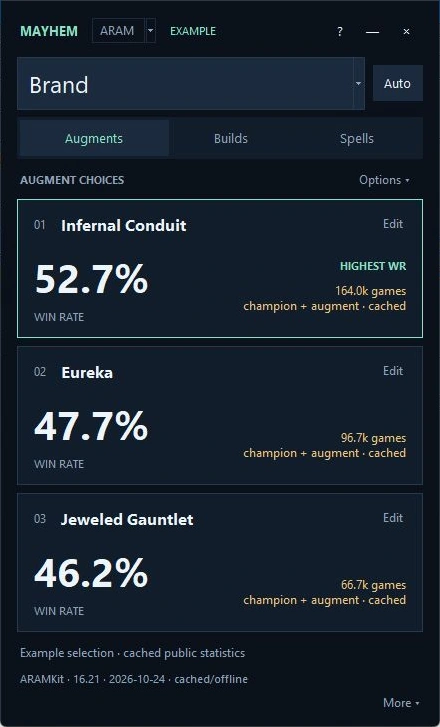
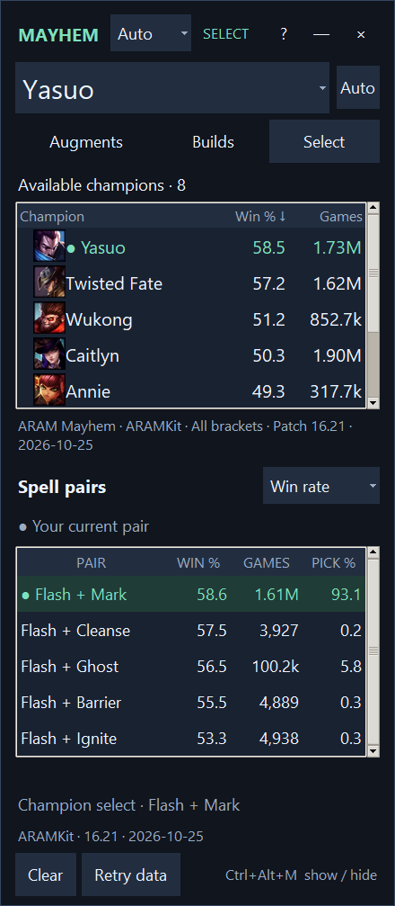
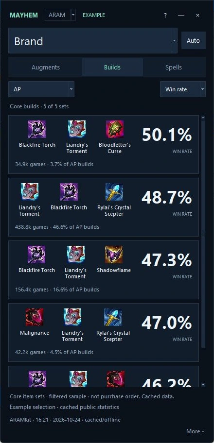

01 ARAM & Mayhem
From select to your next item.
Compare available champions, spell pairs and augment choices, then browse core builds and follow-up items. Statistics use the source’s Mayhem sample.
Free for Windows / 64-bit
For ARAM Mayhem and Arena, plus TFT comps, builds and augment help.
Personal prototype · Not Riot-approved
Limitations



Example views. Statistics vary by patch and sample.
A place for the details
The panel follows supported game modes, with a portrait-monitor preference and quick tray controls.
01 ARAM & Mayhem
Compare available champions, spell pairs and augment choices, then browse core builds and follow-up items. Statistics use the source’s Mayhem sample.
02 Arena
Separate champion, augment and item statistics. Small samples are marked, and missing champion–augment observations stay blank.
03 TFT
Browse comps, unit item builds and augment descriptions or expert tiers. Augment choices are entered manually; the app does not read your board.
Get started
Windows 10/11, 64-bit. No Python or PowerShell setup needed.
Open MayhemCompanionSetup.exe and follow the setup window. Python and the app are included.
Launch Mayhem Companion from setup or its shortcut, then open League in borderless or windowed mode. The M tray icon has an optional Start with League setting.
This installer is not code-signed, so Windows may show an unknown-publisher warning. Download it only from this project’s GitHub release.
Automatic augment reading uses Windows’ English OCR language feature. If it is unavailable, add English OCR in Windows language settings; manual augment lookup remains available.
Can’t see the panel? Click the M icon in the Windows tray or press Ctrl+Alt+M. Automatic launches wait in the tray until a supported game starts.
Uninstall from Windows Settings → Apps → Mayhem Companion. Your settings and cache remain in %USERPROFILE%\MayhemCompanion unless you remove them yourself.
Download source ZIP and extract it to a local Windows folder. Install Python 3.12 or later with Tk support, then run Setup.ps1 with PowerShell.
Source setup instructions and developer checks are in the README.
Riot’s published policy lists augment and Arena-item win-rate displays as unapproved. This prototype is not Riot-approved. Read the limitations.
Built with feedback
A blank card, an incorrect stat, an idea—tell us what happened.
See the current app documentation for data collection details. Champion and game context come from read-only local League APIs. OCR runs locally, and automatic screen captures stay in memory on your computer.
The app fetches public statistics and artwork from external providers. Those requests can reveal the public champion being looked up; this is not an entirely offline app. League credentials, Riot IDs, match histories and screenshots are not uploaded automatically.
Feedback is shared only when you choose to send it. You can review optional technical details and attach screenshots yourself. This website adds no analytics scripts. Cloudflare hosts this site and may process IP addresses and request or traffic data to deliver and secure it. See Cloudflare’s privacy policy. The GitHub Pages mirror is subject to GitHub’s hosting data practices.
This is a personal prototype, not a Riot-approved product. Riot’s policy lists augment and Arena-item win-rate displays as an unapproved use case. No claim is made about guaranteed account safety or enforcement.
Mayhem statistics come from ARAMKit; the Mayhem sample also appears when browsing ordinary ARAM. Arena uses winrate.lol, whose win-rate finish cutoff is unspecified. TFT comp and item-build data comes from Tactics.tools; augment expert tiers come from MetaTFT. Expert tiers are not augment win rates.
Data may be incomplete, delayed or based on small samples. Each provider’s scope and terms apply; public availability does not establish redistribution rights. Source attribution, patch information and missing-data indicators appear in the app.
English augment titles and borderless/windowed League are supported. OCR may miss a title, so manual lookup remains available. Arena and TFT have not yet been verified through a full live match. See the verification notes for current test coverage.